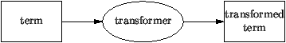
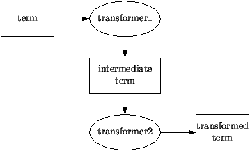

1.1 Specifying Program Transformation Systems with Stratego
Stratego is a language for the specification of program
transformation systems based on the paradigm of rewriting
strategies. Stratego specifications give rise to term
transformers that read a term and output a transformed
term. Such transformation components can easily be composed
into transformation pipelines.
Term Transformation Systems
Stratego is a language for the specification of automatic
program transformation systems. In the Stratego model, a
program transformation system is a program that reads a
program, applies a transformation to it, and, if that
succeeds, spits out the transformed program or otherwise
states that it failed (Figure 1). Programs
are supposed to be represented by means of abstract syntax
trees or terms. A transformation system is thus a
program that transforms terms to terms.
Transformation components can be composed into pipelines that
interface by means of intermediate terms
(Figure 2). In this fashion large program
transformation systems can be built from small reusable
components, provided that the components synchronize on the
intermediate languages used.
Specifying Transformations with Rewriting Strategies
Basic transformation rules can be expressed as term
rewrite rules of the form l -> r that transform a term
matching l to an instantiation of r.
Pure rewrite rules with a standard evaluation strategy are not
sufficient for most program transformation jobs, because more
fine grained control over their application is needed. Usually
such control is encoded in the rewrite rules themselves,
leading to bad reusability of rules and a large overhead for
expressing traversals over the abstract syntax tree.
Instead Stratego offers a language of user-definable
rewriting strategies that provide control over the
application of transformation rules. This is achieved by a
set of operators for the expression of generic traversals over
abstract syntax trees (Figure 3). The basic
operators can be combined to achieve a wide range of traversal
algorithms.
The use of strategies greatly reduces the overhead caused by
explicitly programming term traversals. Furthermore, since
individual transformation rules are freed from the burden of
encoding traversals, they can be reused in other situations.
Finally, the strategy operators turn out to be an interesting
new programming paradigm that allow one to reach deep into
terms without much effort.
Figure 1:
Basic architecture of a transformation system

Figure 2:
Composition of transformation systems

Figure 3:
Generic term traversal